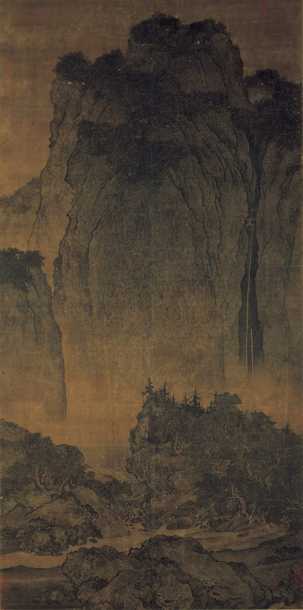

藝術101名畫背後的故事 EP18
谿山行旅圖
范寬・北宋（約 11 世紀初）

畫家把名字藏在樹叢裡，九百年後才被找到。
一座山塞滿畫面
《谿山行旅圖》是北宋范寬的作品，絹本、高 206.3 公分，現藏台北國立故宮博物院。主峰幾乎佔滿上半部，山腳下的行旅小得像螞蟻。
1958 年的發現
很長一段時間，這幅畫歸於范寬，靠的是後人的題字與著錄。1958 年，故宮的李霖燦在畫面右下角、驢隊後方的樹葉之間，找到兩個小字「范寬」。也有人質疑這兩個字是後人補上的。
山腳那支驢隊
兩個男人趕著四頭驢，沿著溪邊小路走。領頭的人回頭招呼同伴，後面的人背著竹笈。人小山大，正是北宋山水想給你的感覺。
下次看到它，先看這裡
「范寬」款識 驢隊後方樹葉間的兩個小字
驢隊行旅 兩人四驢，沿溪邊小路前行
主峰瀑布 主山右側峽谷，一線白瀑
作品資料
范寬（Fan Kuan）
《谿山行旅圖》Travelers among Mountains and Streams，北宋（約 11 世紀初）
絹本、水墨淡設色，立軸 206.3 × 103.3 公分
台北 國立故宮博物院
《谿山行旅圖》Travelers among Mountains and Streams，北宋（約 11 世紀初）
絹本、水墨淡設色，立軸 206.3 × 103.3 公分
台北 國立故宮博物院